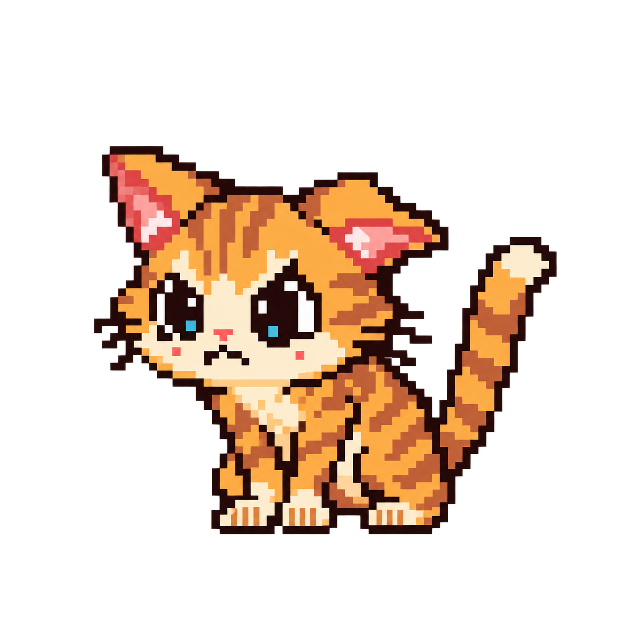

* CAT found an old rulebook.
* It contains several laws no one remembers passing.
* "I MUST ALWAYS GET 100."
* THE RULEBOOK has stamped this FINAL.
* CAT found an old rulebook.
* It contains several laws no one remembers passing.
* "I MUST ALWAYS GET 100."
* THE RULEBOOK has stamped this FINAL.

Cat kept the useful goals: learn, prepare, care, do good work.
One internal law survived review as a guideline. The others lost automatic authority.
The Rulebook may still make suggestions. Cat can inspect them before obeying.
ENCOUNTER COMPLETE.
RETURN TO MAP